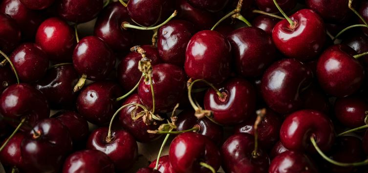

Can Dogs Have Cherries Without The Pit?
Can Dogs Have Cherries Without The Pit?
Yes, dogs can have cherries without the pit. A cherry without the pit is safe for dogs to consume, as long as the cherry is not ingested whole. The pit in cherries contains cyanide which can cause serious harm or even death to a dog if consumed.
Cherries containing pits should be left out of a dog's diet. The pits should be removed before feeding them to your dog.
The pit in cherries is not easily digested by dogs, so they can become stuck in the esophagus or digestive tract. This obstruction could cause severe pain and require emergency surgery to save a dog's life.
Dogs should only consume cherries that have been pitted by humans, patted dry prior to feeding, and consumed in moderation (no more than one cherry at a time). No other parts of the cherry plant should be fed to dogs because these parts contain cyanide as well.
What exactly is a cherry?
A cherry is a fruit that is grown on a tree and is characterized by its fleshy, edible seed inside a hard pit.
The cherry is derived from the Old English word 'cere', and comes to us through the Latin term 'cerasum'. Cherries are not only delicious, but they contain vitamins A and C, antioxidants, anti-inflammatory agents, flavonoids (which may help reduce tumor growth in humans), and anthocyanins which inhibit the breakdown of bone tissue.
In addition to their beneficial nutrients, cherries also have protective benefits against cardiovascular disease (the consumption of one cup or five fresh cherries per week can reduce a person's risk of heart disease by 26%). Also, regular consumption of cherries has been shown to increase endurance during exercise, improve recovery times after exercise, and decrease muscle damage.
What is a cherry pit?
A cherry pit is the part of the cherry that does not dissolve in your mouth. It will just pass through the intestines, leaving behind a pit-shaped object that is often quite dry and hard.
If your dog eats a cherry pit he can get sick because the cherries are not acidic enough to break down inside his stomach and begin dissolving; therefore, when they come into contact with water, such as in the digestive tract, they cause gas and/or blockages.
Just feed him cherries without pits instead of glace or dried cherries! Lol But be careful because even if you remove the pit from its source there might still be an invisible trace of it left on it so make sure that you are monitoring their activities carefully while waiting for medical treatment to begin working its magic.
Benefits of cherries to dogs
Our furry companions can also benefit from cherries. Cherry extracts have been shown to reduce tooth inflammation in dogs and increase salivary flow (the rate at which the mouth produces saliva). The juice of the cherry may help with pain relief or even potentially act as a gentle sedative. As well, there is some evidence that suggests cherries may be beneficial for gastrointestinal health due to their fiber content and anti-inflammatory properties.
How can Cherries harm dogs?
Many foods contain chemicals that serve as natural pesticides; among these are benzaldehyde, hydrogen cyanide, and prussic acid, all found in significant amounts in cherry pits. Since our canine friends cannot vomit, it is important to consider this when feeding them food items with seeds, like cherries.
A human will need to pit the cherries that will be fed to the dog; as well, you should only feed your pooch one cherry at a time. If there are an excessive amount of seeds ingested at once, there is a possibility that your dog could have some difficulty.
Within 30 minutes to two hours after eating the cherry with pits in it, dogs may begin showing signs of abdominal pain and vomiting. The most common symptom is gastrointestinal upset which may be accompanied by nausea and lethargy. Very large amounts can cause respiratory difficulties while smaller amounts can still result in dizziness and heart palpitations in some cases.
Is cherries without the pit safe for dogs?
Yes, cherries without the pit is safe for dogs. The pit is the bad part of the cherry.
The cherries that are safe and good for dogs have been separated from the pits, so they are just like regular food after that. Pits in cherries can be poisonous to your dog if they eat too many. The pits contain insoluble substances which could cause physical problems with digestion and intestinal blockage.
What if I happen to swallow cherry pits?
When humans swallow whole cherries, the pits usually pass right through our digestive system without causing a bother.
It is not recommended to give your dog cherry pits, but if you do happen to swallow one or they get into your mouth, there are no ill effects to worry about other than the pit itself which causes gagging and choking feelings in some cases. As long as you do not eat say 100 cherries in one sitting, you should be ok.
How many cherries can my dog eat?
The amount of cherries that a dog can have depends on his weight and health condition. As a rule of thumb, small dogs like Yorkies, Chihuahuas and Maltese are fine with 10 cherries as snacks while bigger dogs need more. Some extra care needs to be taken with puppies, senior citizens and sick dogs because they may have different digestion systems from.
What is cyanide?
You might have heard about cyanide in many different tv shows or movies. Cyanide is a deadly chemical found mostly in cherry pits. That is why cherries that have pits are toxic to dogs. The leaves, stems and fruit of the cherry plant also contain cyanide but it's a lesser amount when compared to the pit.
Here is a list of some different types of cyanide:- Hydrogen cyanide (HCN)
- Potassium cyanide (KCN)
- Cyanogen chloride (CNCl)
- Sodium cyanide (NaCN)
This is the most toxic of all cyanides and has a slightly fruity odor.
This type of cyanide can slow down the heart rate and is heavier than air. This type of cyanide is not very toxic but it will cause gastrointestinal issues if ingested.
This type of cyanide actually doesn't smell like much at all and it can react quickly with water to produce the gas hydrogen cyanide.
Sodium cyanide (NaCN) is less toxic than the other types of cyanide and can dissolve in water or burn.
What is cyanide poisoning?
Cyanide poisoning is a condition in which there is pain, weakness and even death due to the accumulation of nitrate compounds. It is caused by cherry pits which contain amygdalin and cyanogenetic glycosides. The compounds are released when ingested from their host cherry fruits. Dogs have sensitive digestive systems unlike humans so they need to be extra careful with these foods because it has the potential of causing acute gastrointestinal problems like vomiting, diarrhea and gas.
Some symptoms of cyanide poisoning?
- Confusion
- Nausea
- Seizures
- Headache
- Difficulty Breathing
- Weakness
- Cardiac Arrest
- Loss of consciousness
What Do You Do if Your Dog Swallows a Whole Cherry?
If your dog eats a whole cherry, you do not have to panic. One cherry by itself will not cause any serious problems unless he/she eats a large amount of this fruit. If your dog swallows one whole cherry, it would be best to watch him for the next 24 hours as well as monitor his poop. If your dog has eaten a whole cherry and you can feel the pit in his stomach, take him to the vet immediately.
Unfortunately, if your dog ingests more than one whole cherry at a time or multiple cherries over a period of time, he may start developing serious gastrointestinal problems and vomit frequently. In addition, once these types of symptoms begin to show, they usually will not go away until you treat them medically. Your dog could also develop diarrhea and have gas pains when suffering from GI distress caused by cherries so make sure that you are monitoring their activities carefully while waiting for medical treatment to begin working its magic.
Take him/her to the vet because if he/she ingests the pit.CAN DOGS EAT GLACÉ CHERRIES?
No, dogs should not eat glace or dried cherries because these types of cherries contain lots of sugar. Sugar is bad for dogs as they have high amounts of uric acid which can accumulate in the bloodstream, especially when mixed with sugar (which cherries are).
Are There Any Safer Alternatives To Cherries?
There are many other fruits that are much safer for dogs. You can purchase pears, apples or plums instead of cherries.
You can also consider providing your pet with some dog friendly vegetables. Just make sure that you avoid giving him potatoes or tomatoes, as they're not good for his system.
Chocolate is another big NO-NO because it contains theobromine which may affect dogs' nervous system just like caffeine does in humans. If your dog ingested any chocolate, more than likely he will act drunk and experience vomiting and diarrhea. All types of chocolate are bad for Fido no matter who it's made by as long as he has eaten some. Dogs cannot digest this sweet treat and it is extremely toxic to their nervous system resulting in death if exposed too much over time.
The last but not least thing to add is that grapes and raisins are toxic to pets and so should be avoided at all times.
Grapes and raisins both contain a compound called "solanine". Solanine is also in potatoes and tomatoes, but dogs tend not to like those as much as they do grapes and raisins. Solanine can cause damage to the heart and nervous system when ingested by dogs.
Solanine can be found in other unexpected places such as:- Potatoes
- Tomato plants and their leaves
Potatoes should not be fed to dogs as they can cause them to become very sick and even lead to death.
Potato plants are members of the deadly nightshade family. Solanine is an alkaloid that protects the plant from being eaten by insects. It has no effect on humans, but it is highly toxic for canines. The leaves, stems, flowers, as well as green potatoes contain solanine which is readily absorbed in the digestive tract of dogs and poisonous to their central nervous system.
Tomatoes are bad for dogs because they contain Atropine. It's a good idea to keep tomato plants out of reach and if possible completely away from your dog at all times! Tomatoes are good for humans but dogs cannot handle the atropine in them.
Unsafe vegetables or fruits for dogs
- Citrus fruits
- Grapes
- Raisins
- Kiwi Fruit
- Lemon
- Lime
- Oranges
Citrus fruits like lemon peel, oranges, grapefruits, tangerines and even limes are all bad for dogs because they can cause big trouble with their digestion and even kill them. If your pooch likes the taste of these fruits, make sure to slice them up before feeding him any piece of it at all.
Grapes like raisins have been known to cause kidney failure in dogs so never let Fido have any amount of grapes ever! They will definitely poison his system or kill him.
Raisins are bad for dogs! They are very toxic for them, so never let him have any amount of raisins because they can and will kill him.
This fruit can be very toxic but only if the seeds are consumed.
Lemon can be very toxic to dogs so be careful they don't eat too much of this. Lemons contain citric acid and when ingested it can cause upset stomach, diarrhea, or even kidney failure so keep an eye on your dog while he's eating this fruit.
Lime is very toxic just like lemons but lime's have less citric acid then lemons do. You should still be careful with how much of these you give to your dogs though.
This fruit can also be toxic to dogs but only if they eat too many seeds from the papaya. Watching out for the seeds is key here and will prevent a potential trip to the vet.
WILL CHERRIES MAKE YOUR DOGS SICK?
This all depends on whether the pit has been removed from the cherry. If pit has been removed, then your dog will be safe to eat them. If the pit remains in the cherry it's a whole other story.
If you look at how cherries grow on trees you'll see that they have a small rip or crack which is there naturally and is not what could cause harm! The problem comes from where the fruit was picked and stored. If it has grown very high up on the tree, dryness can occur so if the cherry dries out before being picked then bacteria can set in and create even more cyanide inside.
Conclusion
It is possible that your dog could get sick from eating cherries, but it's not likely. Most of the time when dogs are poisoned by cherry pits, they've eaten an entire jar without realizing what was in them or have been given a single one as a prank. Dogs usually don't eat fruit unless you feed them for some reason, so if you're worried about how much your pup eats while he's home alone all day, there are better ways to keep him safe than buying expensive baby gates and locks! If you want to make sure their little tummies stay happy though, we recommend feeding them much safer fruits and vegetable.